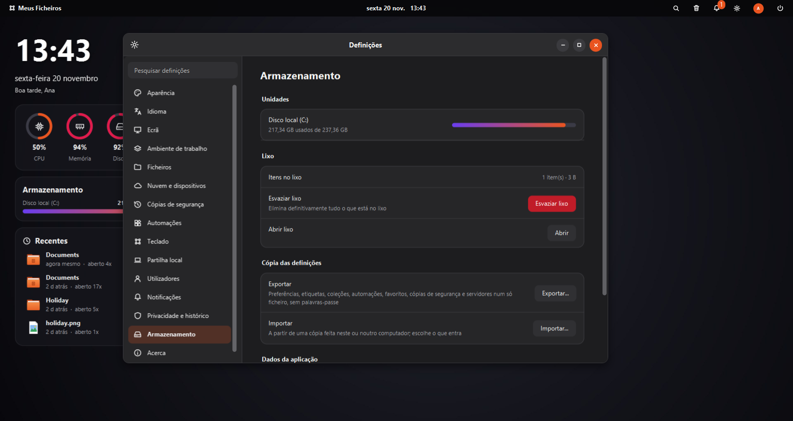

Os seus dados e a sua privacidade
O FileExp funciona offline e guarda tudo no seu computador. Não tem conta, não tem análises e não envia nada para a Muendu Studio. As únicas ligações de rede são as que o utilizador inicia: contas WebDAV, transferências da internet, servidores de rede e Partilha local.
Onde o FileExp guarda os seus dados#
| Pasta | Conteúdo |
|---|---|
~/.fileexp/data | Preferências, o seu perfil, favoritos, atividade, etiquetas, coleções inteligentes, linha do tempo, tarefas de cópia de segurança, automações, contas, servidores de rede |
~/.fileexp/keys | A chave que cifra as palavras-passe WebDAV |
~/.fileexp/vault | O cofre cifrado |
~/.fileexp/transfer | As suas definições como estavam antes de cada importação (as últimas 5), para Anular |
~/.fileexp/vault-open | Ficheiros decifrados, só enquanto o cofre está aberto (esvaziada quando se fecha) |
~/.fileexp/cache | Ficheiros abertos a partir de contas na nuvem |
~/.fileexp/logs | O registo de erros: fileexp-0.log (o mais recente) a fileexp-4.log, nunca mais de 5 MB |
~/.octopusfile/trash | O Lixo |
~ é a sua pasta pessoal: C:\Users\<utilizador> no Windows, /home/<utilizador> no Linux.
A base de dados#
Os dados são uma pequena base de dados de documentos feita para o FileExp: um ficheiro JSON por coleção (settings.json, journal.json, tags.json…). Cada gravação escreve um ficheiro temporário e depois muda-lhe o nome, para que uma falha de energia não possa deixar um ficheiro escrito a meio, e a versão anterior é guardada como .bak.
O que é registado#
| Dados | Porquê | Como desligar ou limpar |
|---|---|---|
| Ficheiros e pastas que abre (contagem e última vez) | Mais abertos e Recentes | Definições › Privacidade e histórico |
| Linha do tempo (últimos 5 000 eventos) | A Linha do tempo | Definições › Privacidade e histórico › limpar histórico |
| Favoritos | Visão geral | Definições › Privacidade e histórico › limpar favoritos |
| Palavras-passe WebDAV | Ligar às suas contas | Guardadas cifradas; remova a conta para as apagar |
| Servidores SMB | Voltar a ligar | Só é guardado o endereço, nunca a palavra-passe |
| Erros e avisos (hora, o que falhou, onde no código) | Perceber um problema mais tarde (Copiar relatório) | Definições › Privacidade e histórico › limpar registo de erros |
O registo de erros nunca contém o conteúdo dos seus ficheiros, palavras-passe nem os nomes dos ficheiros do cofre. Antes de qualquer coisa ser escrita, a sua pasta pessoal passa a ~, o seu nome de utilizador a <user> e o nome do computador a <computer>. O registo fica no seu computador: o FileExp nunca o envia para lado nenhum. Copiar relatório só põe o texto na área de transferência, para que o possa ler antes de o colar.
Mudar para outro computador#
Definições › Armazenamento › Cópia das definições leva a sua personalização consigo.

- Exportar… e escolha uma pasta (uma pen USB, uma pasta da nuvem). O FileExp grava
FileExp-settings-<data>.fexp. - No outro computador (ou depois de reinstalar), Importar… e escolha esse ficheiro.
- O FileExp mostra o que a cópia contém — Preferências, Etiquetas, Coleções inteligentes, Automações, Favoritos, Cópias de segurança, Servidores de rede, Contas na nuvem — com quantos de cada. Desmarque o que não quiser e escolha:
- Juntar: mantém o que já tem e acrescenta o que falta (nada fica repetido);
- Substituir: as partes escolhidas são limpas primeiro e depois preenchidas com a cópia.
| Na cópia | Fora da cópia |
|---|---|
| Preferências, etiquetas (e que ficheiros as têm), coleções inteligentes, automações, favoritos, tarefas de cópia de segurança, servidores de rede, contas na nuvem | Palavras-passe (as contas na nuvem voltam a pedir a sua), o cofre, o Lixo, o histórico e a linha do tempo, o nome do computador na Partilha local, a sua pasta de receção, se a partilha está ligada, se o assistente de configuração já foi feito e a aceitação das licenças (cada computador tem as suas) |
- Outro nome de utilizador: os caminhos dentro da pasta pessoal acompanham-no —
C:\Users\Ana\Picturespassa aC:\Users\Rui\Pictures(também de Windows para Linux). Os locais que não existem no novo computador são listados; ficam guardados e voltam a funcionar quando essas pastas existirem. - Anular: antes de importar, o FileExp guarda as definições atuais em
~/.fileexp/transfer(as últimas 5). A notificação Definições importadas tem Anular, que repõe tudo, palavras-passe incluídas. - Versões: uma cópia feita por um FileExp mais antigo é lida e atualizada; uma feita por um FileExp mais recente é recusada, com uma mensagem a pedir a atualização.
Licenças aceites#
No primeiro arranque, o assistente pede a aceitação da licença do FileExp e dos avisos dos componentes incluídos (consulte Instalação e primeira execução). Em settings.json fica guardado só o número da versão dos documentos aceites e a data e hora (legalAccepted, legalAcceptedAt); nada é enviado. Os textos estão sempre em Definições › Acerca › Licenças e avisos legais.
Remover tudo#
Saia do FileExp e apague as pastas .fileexp e .octopusfile na sua pasta pessoal. Atenção: isto também apaga o cofre e o Lixo.